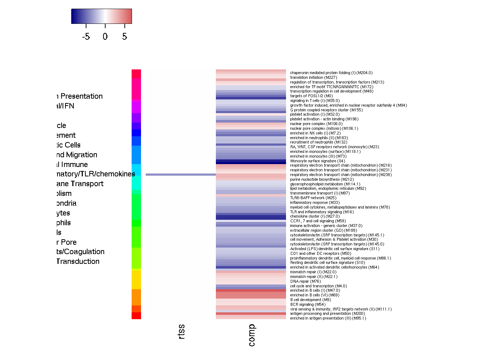
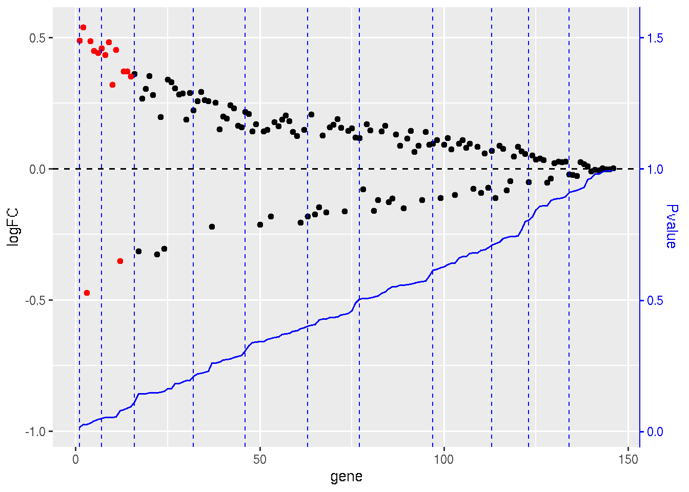
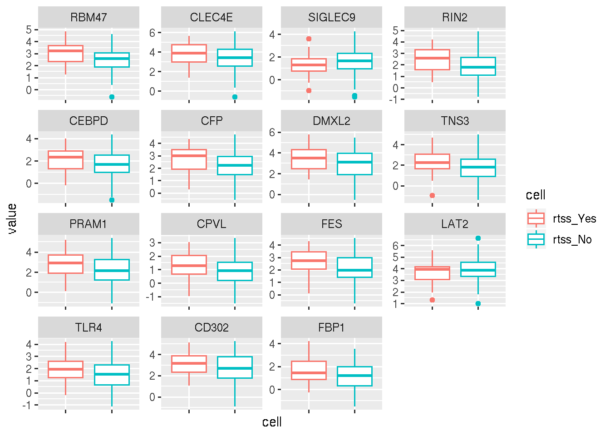
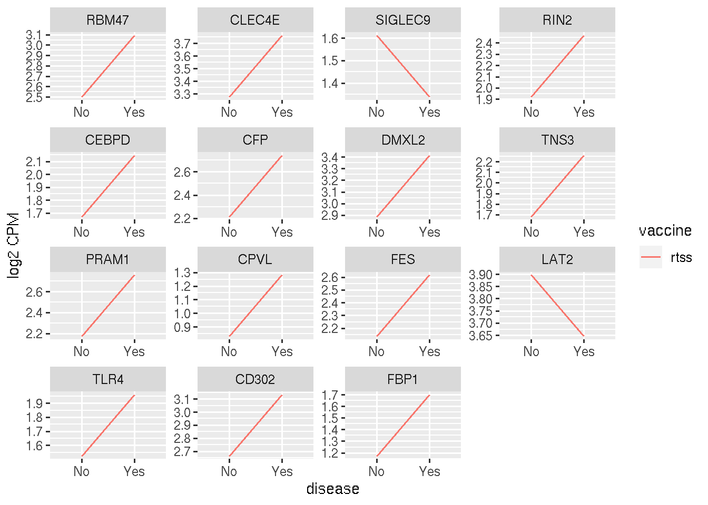
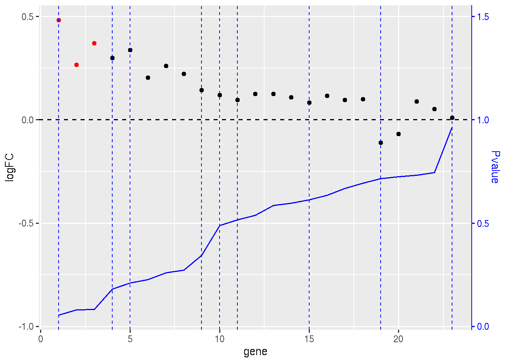
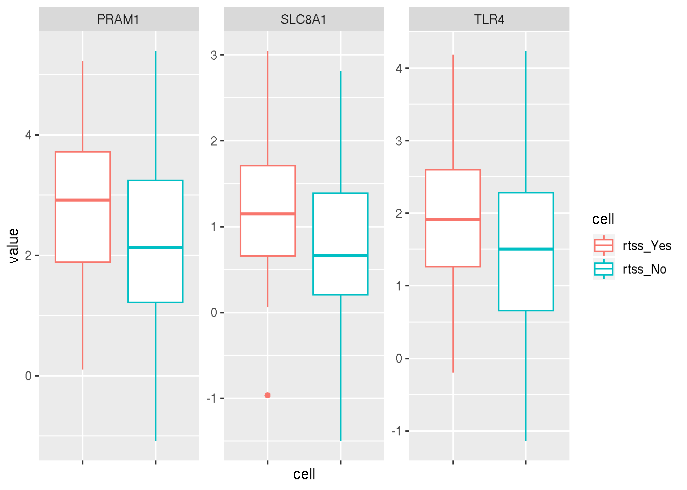
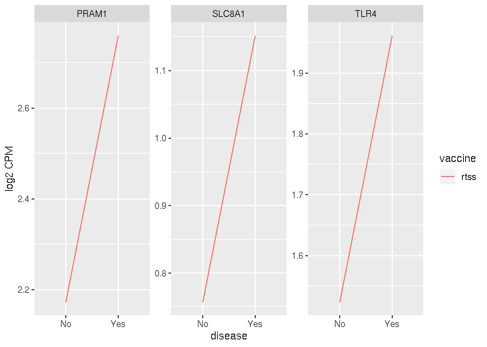

Last updated: 2020-02-07
Checks: 7 0
Knit directory: mal067project/
This reproducible R Markdown analysis was created with workflowr (version 1.6.0). The Checks tab describes the reproducibility checks that were applied when the results were created. The Past versions tab lists the development history.
Great! Since the R Markdown file has been committed to the Git repository, you know the exact version of the code that produced these results.
Great job! The global environment was empty. Objects defined in the global environment can affect the analysis in your R Markdown file in unknown ways. For reproduciblity it’s best to always run the code in an empty environment.
The command set.seed(20181108) was run prior to running the code in the R Markdown file. Setting a seed ensures that any results that rely on randomness, e.g. subsampling or permutations, are reproducible.
Great job! Recording the operating system, R version, and package versions is critical for reproducibility.
Nice! There were no cached chunks for this analysis, so you can be confident that you successfully produced the results during this run.
Great job! Using relative paths to the files within your workflowr project makes it easier to run your code on other machines.
Great! You are using Git for version control. Tracking code development and connecting the code version to the results is critical for reproducibility. The version displayed above was the version of the Git repository at the time these results were generated.
Note that you need to be careful to ensure that all relevant files for the analysis have been committed to Git prior to generating the results (you can use wflow_publish or wflow_git_commit). workflowr only checks the R Markdown file, but you know if there are other scripts or data files that it depends on. Below is the status of the Git repository when the results were generated:
Ignored files:
Ignored: .Rhistory
Ignored: analysis/.Rhistory
Untracked files:
Untracked: Faust_monocyte_boxplot.pdf
Untracked: analysis/DeRosaMonocyteProcessing.Rmd
Untracked: analysis/children/gsea_plot_delta_genes.Rmd
Untracked: analysis/children/stim_GSEA_interaction_case_effect.Rmd
Untracked: analysis/children/stim_GSEA_interaction_mono_effect.Rmd
Untracked: analysis/children/stim_GSEA_main_mono_effect.Rmd
Untracked: analysis/primary_interaction_mono_AMA.Rmd
Untracked: analysis/primary_interaction_mono_CSP.Rmd
Untracked: analysis/primary_interaction_mono_HBS.Rmd
Untracked: analysis/primary_main_M0_AMA.Rmd
Untracked: analysis/primary_main_M0_DMSO_bak.Rmd
Untracked: analysis/primary_main_mono_AMA.Rmd
Untracked: analysis/primary_main_mono_CSP.Rmd
Untracked: analysis/primary_main_mono_DMSO.Rmd
Untracked: analysis/primary_main_mono_HBS.Rmd
Untracked: analysis/process_deltas.Rmd
Untracked: analysis/secondary_covariates.Rmd
Untracked: code/ARDAP1_transcript.Rmd
Untracked: code/mal_utilities.R
Untracked: cor_table.RDS
Untracked: data/.~lock.170830-RTSS case control phenotyping.txt#
Untracked: data/170830-RTSS case control phenotyping.txt
Untracked: data/BTM_for_GSEA_20131008.gmt
Untracked: data/CD4_CSP_PFS.rds
Untracked: data/CD4_HBS_PFS.rds
Untracked: data/CD8_CSP_PFS.rds
Untracked: data/CD8_HBS_PFS.rds
Untracked: data/CiberSort_RTSS.csv
Untracked: data/DeRosaMonocyteFrequencies.csv
Untracked: data/ICS_Primary_MAL067.pptx
Untracked: data/PRIMARY_CD4_MAGNITUDE.rds
Untracked: data/Pulendran_GSEA_disease.csv
Untracked: data/RTSSPilotRNA-seqSAP_v4.pdf
Untracked: data/Vahey_GSEA_disease.csv
Untracked: data/btm_annotation_table.tsv
Untracked: data/btm_annotation_table_LNC.csv
Untracked: data/btm_annotation_table_LNC.ods
Untracked: data/faustOutputAllRtss_v02.csv
Untracked: data/ics_extra_vars_20180515.csv
Untracked: data/long_dis_DupCor.csv
Untracked: data/long_vac_DupCor.csv
Untracked: data/m067_seattle_data.RData
Untracked: data/phenoLineagePctLive.txt
Untracked: data/visit_DupCor.csv
Untracked: output/DMSO_M3_vaccine_disease_interaction.csv
Untracked: output/DMSO_M3_vaccine_disease_interaction_DEG.csv
Untracked: output/Fig2A_vaccine_both_dmso_M3.csv
Untracked: output/Fig2B_M3-M0_rtss.csv
Untracked: output/Fig3A_M3_case_control.csv
Untracked: output/Fig3B_M3-M0_rtss.csv
Untracked: output/GSEA_M0_ama1_vac_dis.csv
Untracked: output/GSEA_M0_csp_vac_dis.csv
Untracked: output/GSEA_M0_hbs_vac_dis.csv
Untracked: output/GSEA_M3_ama1_vac_dis.csv
Untracked: output/GSEA_M3_ama1_vac_dis_case.csv
Untracked: output/GSEA_M3_csp_vac_dis.csv
Untracked: output/GSEA_M3_hbs_vac_dis.csv
Untracked: output/M3-M0_both.csv
Untracked: output/M3-M0_by_vaccine.csv
Untracked: output/M3-M0_comp.csv
Untracked: output/M3-M0_disease_mal.csv
Untracked: output/M3-M0_disease_mal_comp.csv
Untracked: output/M3-M0_disease_mal_rtss.csv
Untracked: output/M3-M0_disease_nomal_comp.csv
Untracked: output/M3-M0_disease_nomal_rtss.csv
Untracked: output/M3-M0_rtss.csv
Untracked: output/M3_dmso_vaccine.csv
Untracked: output/cell_dist_mediods
Untracked: output/cibersort_cells.csv
Untracked: output/cibersort_cells.pdf
Untracked: output/disease_both_ama1_M0.csv
Untracked: output/disease_both_dmso_M0.csv
Untracked: output/disease_both_dmso_M3.csv
Untracked: output/disease_comp_dmso_M3.csv
Untracked: output/disease_ds_both_ama1_M0.csv
Untracked: output/disease_ds_both_dmso_M0.csv
Untracked: output/disease_ds_both_dmso_M3.csv
Untracked: output/disease_rtss_dmso_M3.csv
Untracked: output/dmso_M0_both_disease.csv
Untracked: output/dmso_M0_old_disease.csv
Untracked: output/dmso_M3_both_disease.csv
Untracked: output/dmso_M3_old_disease.csv
Untracked: output/dmso_M3_young_disease.csv
Untracked: output/figures/
Untracked: output/manuscript/
Untracked: output/sig_dis_genes_david.csv
Untracked: output/stim_deltas.rds
Untracked: output/stim_deltas_cpm_unlogged.rds
Untracked: output/vaccine_both_ama1_M0.csv
Untracked: output/vaccine_both_dmso_M0.csv
Untracked: output/vaccine_both_dmso_M3.csv
Untracked: secondary_faust.html
Untracked: test.pdf
Unstaged changes:
Modified: analysis/analysis_DMSO_M3_GSEA.Rmd
Modified: analysis/analysis_GSEA_M3_stimulations.Rmd
Modified: analysis/children/stim_GSEA_interaction_effect.Rmd
Modified: analysis/children/stim_GSEA_main_effect.Rmd
Modified: analysis/combine_GSEA.Rmd
Modified: analysis/experimental_design.Rmd
Modified: analysis/exploratory_ML_ratio.Rmd
Modified: analysis/exploratory_antibody.Rmd
Modified: analysis/exploratory_heno_gene_expression_disease_protection.Rmd
Modified: analysis/exploratory_monocyte_derosa.Rmd
Modified: analysis/index.Rmd
Modified: analysis/primary_Bagamoyo_GSEA.Rmd
Modified: analysis/primary_interaction_M3_AMA.Rmd
Modified: analysis/primary_main_M0_DMSO.Rmd
Modified: analysis/primary_main_M3_DMSO.Rmd
Deleted: analysis/secondary_disease_all_samples.Rmd
Modified: analysis/secondary_faust.Rmd
Note that any generated files, e.g. HTML, png, CSS, etc., are not included in this status report because it is ok for generated content to have uncommitted changes.
These are the previous versions of the R Markdown and HTML files. If you’ve configured a remote Git repository (see ?wflow_git_remote), click on the hyperlinks in the table below to view them.
| File | Version | Author | Date | Message |
|---|---|---|---|---|
| Rmd | dd65764 | carlmurie | 2020-02-07 | wflow_publish(“analysis/manuscript*.Rmd“) |
disease linear model: ~plate + total_reads + age + case
disease filtering : M3
| total | comparator | rtss | X0 | X1 | young | old | M0 | M3 | control | case | |
|---|---|---|---|---|---|---|---|---|---|---|---|
| dmso | 193 | 70 | 123 | 141 | 52 | 74 | 119 | 0 | 193 | 140 | 53 |
| geneset | NGenes | Direction | PValue | FDR |
|---|---|---|---|---|
| respiratory electron transport chain (mitochondrion) (M238) | 17 | Down | 0.0001453 | 0.0385 |
| geneset | NGenes | Direction | PValue | FDR |
|---|---|---|---|---|
| enriched in monocytes (II) (M11.0) | 146 | Down | 0.0000000 | 0.0000005 |
| Monocyte surface signature (S4) | 69 | Down | 0.0000000 | 0.0000026 |
| chemokines and inflammatory molecules in myeloid cells (M86.0) | 17 | Down | 0.0000001 | 0.0000060 |
| chemokine cluster (I) (M27.0) | 20 | Down | 0.0000001 | 0.0000060 |
| enriched in B cells (I) (M47.0) | 39 | Up | 0.0000001 | 0.0000079 |
| AP-1 transcription factor network (M20) | 13 | Down | 0.0000002 | 0.0000106 |
| enriched in activated dendritic cells/monocytes (M64) | 17 | Down | 0.0000006 | 0.0000218 |
| antigen processing and presentation (M200) | 6 | Up | 0.0000010 | 0.0000320 |
| proinflammatory cytokines and chemokines (M29) | 9 | Down | 0.0000035 | 0.0001028 |
| enriched in neutrophils (I) (M37.1) | 29 | Down | 0.0000055 | 0.0001460 |
| suppression of MAPK signaling (M56) | 10 | Down | 0.0000067 | 0.0001490 |
| TBA (M105) | 11 | Down | 0.0000067 | 0.0001490 |
| enriched in B cells (II) (M47.1) | 32 | Up | 0.0000083 | 0.0001693 |
| enriched in B cells (VI) (M69) | 18 | Up | 0.0000113 | 0.0001850 |
| targets of FOSL1/2 (M0) | 7 | Down | 0.0000114 | 0.0001850 |
| enriched in naive and memory B cells (M83) | 9 | Up | 0.0000114 | 0.0001850 |
| NK cell surface signature (S1) | 24 | Down | 0.0000119 | 0.0001850 |
| TBA (M193) | 10 | Down | 0.0000151 | 0.0002223 |
| immune activation - generic cluster (M37.0) | 210 | Down | 0.0000393 | 0.0005482 |
| cell cycle and growth arrest (M31) | 11 | Down | 0.0000589 | 0.0007570 |
| blood coagulation (M11.1) | 22 | Down | 0.0000600 | 0.0007570 |
| enriched in NK cells (I) (M7.2) | 45 | Down | 0.0000697 | 0.0008207 |
| extracellular matrix, complement (M140) | 7 | Down | 0.0000758 | 0.0008207 |
| enriched in myeloid cells and monocytes (M81) | 23 | Down | 0.0000764 | 0.0008207 |
| TBA (M188) | 9 | Down | 0.0000774 | 0.0008207 |
| enriched in dendritic cells (M168) | 12 | Down | 0.0000821 | 0.0008370 |
| enriched in monocytes (III) (M73) | 10 | Down | 0.0001240 | 0.0012170 |
| myeloid cell enriched receptors and transporters (M4.3) | 26 | Down | 0.0001748 | 0.0016250 |
| Resting dendritic cell surface signature (S10) | 43 | Down | 0.0001778 | 0.0016250 |
| putative targets of PAX3 (M89.0) | 12 | Down | 0.0001898 | 0.0016770 |
| enriched in monocytes (IV) (M118.0) | 48 | Down | 0.0002396 | 0.0020480 |
| DC surface signature (S5) | 54 | Down | 0.0002807 | 0.0023250 |
| TLR and inflammatory signaling (M16) | 34 | Down | 0.0003277 | 0.0025900 |
| cell cycle and transcription (M4.0) | 226 | Down | 0.0003340 | 0.0025900 |
| spliceosome (M250) | 12 | Up | 0.0003421 | 0.0025900 |
| chemokine cluster (II) (M27.1) | 13 | Down | 0.0004078 | 0.0030020 |
| cytoskeleton/actin (SRF transcription targets) (M145.0) | 11 | Down | 0.0004752 | 0.0033190 |
| G protein coupled receptors cluster (M155) | 9 | Down | 0.0004759 | 0.0033190 |
| mismatch repair (I) (M22.0) | 25 | Up | 0.0005254 | 0.0035700 |
| respiratory electron transport chain (mitochondrion) (M216) | 12 | Up | 0.0005542 | 0.0036720 |
| TBA (M131) | 12 | Down | 0.0005960 | 0.0038520 |
| translation initiation factor 3 complex (M245) | 11 | Up | 0.0006247 | 0.0039420 |
| myeloid cell cytokines, metallopeptidases and laminins (M78) | 9 | Down | 0.0006786 | 0.0041730 |
| enriched in monocytes (surface) (M118.1) | 17 | Down | 0.0006929 | 0.0041730 |
| enriched in NK cells (II) (M61.0) | 13 | Down | 0.0007197 | 0.0042380 |
| TBA (M66) | 17 | Down | 0.0009316 | 0.0053670 |
| cell adhesion (M51) | 8 | Down | 0.0010040 | 0.0056590 |
| cell movement, Adhesion & Platelet activation (M30) | 10 | Down | 0.0011630 | 0.0064190 |
| proteasome (M226) | 12 | Up | 0.0013450 | 0.0071700 |
| transcription regulation in cell development (M49) | 37 | Down | 0.0013570 | 0.0071700 |
| respiratory electron transport chain (mitochondrion) (M238) | 17 | Up | 0.0013800 | 0.0071700 |
| enriched in monocytes (I) (M4.15) | 8 | Down | 0.0015340 | 0.0078190 |
| type I interferon response (M127) | 12 | Up | 0.0015960 | 0.0079800 |
| TBA (M174) | 22 | Up | 0.0017470 | 0.0085730 |
| respiratory electron transport chain (mitochondrion) (M219) | 18 | Up | 0.0018290 | 0.0087660 |
| transmembrane transport (I) (M87) | 19 | Down | 0.0018520 | 0.0087660 |
| proinflammatory dendritic cell, myeloid cell response (M86.1) | 11 | Down | 0.0020070 | 0.0091810 |
| enriched in membrane proteins (M124) | 13 | Down | 0.0020100 | 0.0091810 |
| TBA (M79) | 7 | Down | 0.0020770 | 0.0093290 |
| extracellular matrix (II) (M2.1) | 18 | Down | 0.0023540 | 0.0104000 |
| nuclear pore complex (M106.0) | 17 | Up | 0.0025480 | 0.0110700 |
| viral sensing & immunity; IRF2 targets network (II) (M111.1) | 11 | Up | 0.0028300 | 0.0121000 |
| cytoskeleton/actin (SRF transcription targets) (M145.1) | 9 | Down | 0.0031690 | 0.0133300 |
| regulation of signal transduction (M3) | 33 | Down | 0.0036210 | 0.0149900 |
| cytokines - recepters cluster (M115) | 10 | Down | 0.0037500 | 0.0152900 |
| enriched in antigen presentation (II) (M95.0) | 21 | Up | 0.0039150 | 0.0155700 |
| platelet activation - actin binding (M196) | 6 | Down | 0.0039350 | 0.0155700 |
| chaperonin mediated protein folding (I) (M204.0) | 14 | Up | 0.0044000 | 0.0171500 |
| purine nucleotide biosynthesis (M212) | 12 | Up | 0.0045570 | 0.0175000 |
| TBA (M194) | 13 | Up | 0.0047540 | 0.0180000 |
| enriched in activated dendritic cells (II) (M165) | 29 | Down | 0.0053170 | 0.0198500 |
| recruitment of neutrophils (M132) | 6 | Down | 0.0054720 | 0.0201400 |
| MHC-TLR7-TLR8 cluster (M146) | 16 | Up | 0.0056540 | 0.0205200 |
| formyl peptide receptor mediated neutrophil response (M11.2) | 8 | Down | 0.0058170 | 0.0208300 |
| RA, WNT, CSF receptors network (monocyte) (M23) | 9 | Down | 0.0059290 | 0.0209500 |
| TBA (M114.0) | 21 | Down | 0.0068850 | 0.0238500 |
| TBA (M201) | 14 | Down | 0.0069290 | 0.0238500 |
| inflammatory response (M33) | 8 | Down | 0.0080840 | 0.0274600 |
| enriched in antigen presentation (III) (M95.1) | 13 | Up | 0.0083280 | 0.0275800 |
| enriched in neutrophils (II) (M163) | 7 | Down | 0.0084130 | 0.0275800 |
| mitosis (TF motif CCAATNNSNNNGCG) (M169) | 14 | Up | 0.0084310 | 0.0275800 |
| platelet activation and degranulation (M85) | 8 | Down | 0.0087400 | 0.0279800 |
| complement activation (I) (M112.0) | 10 | Down | 0.0087640 | 0.0279800 |
| TBA (M72.0) | 21 | Up | 0.0092900 | 0.0293100 |
| adhesion and migration, chemotaxis (M91) | 11 | Down | 0.0098430 | 0.0306900 |
| chemokines and receptors (M38) | 11 | Down | 0.0102000 | 0.0314200 |
| TLR8-BAFF network (M25) | 8 | Down | 0.0104400 | 0.0318000 |
| lipid metabolism, endoplasmic reticulum (M92) | 6 | Down | 0.0108800 | 0.0327600 |
| extracellular region cluster (GO) (M189) | 6 | Down | 0.0116300 | 0.0346400 |
| CD1 and other DC receptors (M50) | 6 | Down | 0.0118800 | 0.0349900 |
| enriched in activated dendritic cells (I) (M119) | 10 | Down | 0.0144600 | 0.0421000 |
| nuclear pore, transport; mRNA splicing, processing (M143) | 11 | Up | 0.0147900 | 0.0426000 |
| cytoskeletal remodeling (enriched for SRF targets) (M34) | 8 | Down | 0.0156800 | 0.0446800 |
| TBA (M72.1) | 16 | Up | 0.0171800 | 0.0484400 |
| respiratory electron transport chain (mitochondrion) (M231) | 11 | Up | 0.0176400 | 0.0492000 |
| growth factor induced, enriched in nuclear receptor subfamily 4 (M94) | 7 | Down | 0.0181400 | 0.0500700 |
| Activated (LPS) dendritic cell surface signature (S11) | 28 | Down | 0.0202800 | 0.0553900 |
| mismatch repair (II) (M22.1) | 12 | Up | 0.0211200 | 0.0571200 |
| TBA (M229) | 10 | Up | 0.0251700 | 0.0673600 |
| regulation of transcription, transcription factors (M213) | 17 | Up | 0.0257500 | 0.0682400 |
| enriched for ubiquitination (M138) | 11 | Up | 0.0260100 | 0.0682500 |
| heme biosynthesis (I) (M171) | 10 | Down | 0.0295700 | 0.0768200 |
| TBA (M243) | 12 | Up | 0.0298600 | 0.0768200 |
| TBA (M203) | 13 | Up | 0.0305200 | 0.0777600 |
| innate activation by cytosolic DNA sensing (M13) | 11 | Down | 0.0313600 | 0.0791600 |
| signaling in T cells (I) (M35.0) | 13 | Down | 0.0375200 | 0.0936400 |
| enriched in DNA interacting proteins (M182) | 11 | Down | 0.0378100 | 0.0936400 |
| enriched for TF motif TTCNRGNNNNTTC (M172) | 7 | Down | 0.0396700 | 0.0973300 |
| TBA (M141) | 7 | Down | 0.0406800 | 0.0988900 |
| chaperonin mediated protein folding (II) (M204.1) | 10 | Up | 0.0425400 | 0.1025000 |
| B cell development (M9) | 7 | Up | 0.0430700 | 0.1028000 |
| cell division - E2F transcription network (M4.8) | 14 | Up | 0.0474100 | 0.1120000 |
| enriched in G-protein coupled receptors (M130) | 10 | Down | 0.0477600 | 0.1120000 |
| enriched in B cells (III) (M47.2) | 22 | Up | 0.0506000 | 0.1176000 |
| glycerophospholipid metabolism (M114.1) | 10 | Down | 0.0533100 | 0.1228000 |
| nuclear pore complex (mitosis) (M106.1) | 11 | Up | 0.0559000 | 0.1276000 |
| BCR signaling (M54) | 12 | Up | 0.0563400 | 0.1276000 |
| DNA repair (M76) | 19 | Up | 0.0580300 | 0.1303000 |
| TBA (M93) | 8 | Down | 0.0609300 | 0.1357000 |
| lysosome (M209) | 7 | Down | 0.0618500 | 0.1365000 |
| TBA (M128) | 11 | Up | 0.0623200 | 0.1365000 |
| mitochondrial cluster (M235) | 17 | Up | 0.0631300 | 0.1371000 |
| translation initiation (M227) | 10 | Up | 0.0641100 | 0.1381000 |
| transcription elongation, RNA polymerase II (M234) | 13 | Up | 0.0663200 | 0.1417000 |
| cell cycle, ATP binding (M144) | 16 | Up | 0.0706700 | 0.1498000 |
| TBA (M153) | 15 | Up | 0.0864500 | 0.1818000 |
| TBA (M55) | 11 | Down | 0.0874700 | 0.1825000 |
| TBA (M242) | 11 | Up | 0.0923200 | 0.1911000 |
| platelet activation (I) (M32.0) | 20 | Up | 0.0973600 | 0.1995000 |
| CCR1, 7 and cell signaling (M59) | 8 | Down | 0.0978700 | 0.1995000 |

Only Bagamoya samples with the dmso stimulation are used. A consequence of this is that only subjects from the old age group are included. Additionally only paired samples by subject are included.
| total | comparator | rtss | X0 | X1 | young | old | M0 | M3 | control | case | |
|---|---|---|---|---|---|---|---|---|---|---|---|
| dmso | 106 | 34 | 72 | 80 | 26 | 0 | 106 | 53 | 53 | 80 | 26 |
formula: ~plate + total_reads + pid + visit
coefficient: visitM3
Extract driver genes from down-selected monocyte related significant gene-sets.
Pvalue cutoff <= 0.1
| genenames | logFC | AveExpr | P.Value | adj.P.Val |
|---|---|---|---|---|
| RBM47 | 0.488 | 2.64 | 0.016 | 0.998 |
| CLEC4E | 0.539 | 3.39 | 0.027 | 0.998 |
| SIGLEC9 | -0.472 | 1.54 | 0.027 | 0.998 |
| RIN2 | 0.487 | 2.05 | 0.031 | 0.998 |
| CEBPD | 0.450 | 1.79 | 0.039 | 0.998 |
| CFP | 0.442 | 2.34 | 0.047 | 0.998 |
| DMXL2 | 0.460 | 3.02 | 0.050 | 0.998 |
| TNS3 | 0.434 | 1.82 | 0.053 | 0.998 |
| PRAM1 | 0.482 | 2.32 | 0.054 | 0.998 |
| CPVL | 0.320 | 0.94 | 0.054 | 0.998 |
| FES | 0.453 | 2.25 | 0.056 | 0.998 |
| LAT2 | -0.351 | 3.84 | 0.078 | 0.998 |
| TLR4 | 0.371 | 1.63 | 0.083 | 0.998 |
| CD302 | 0.371 | 2.78 | 0.089 | 0.998 |
| FBP1 | 0.352 | 1.30 | 0.094 | 0.998 |



Pvalue cutoff <= 0.1
| genenames | logFC | AveExpr | P.Value | adj.P.Val |
|---|---|---|---|---|
| PRAM1 | 0.482 | 2.320 | 0.054 | 0.998 |
| SLC8A1 | 0.266 | 0.853 | 0.081 | 0.998 |
| TLR4 | 0.371 | 1.630 | 0.083 | 0.998 |



R version 3.6.1 (2019-07-05) Platform: x86_64-pc-linux-gnu (64-bit) Running under: Ubuntu 14.04.5 LTS
Matrix products: default BLAS/LAPACK: /app/easybuild/software/OpenBLAS/0.2.18-GCC-5.4.0-2.26-LAPACK-3.6.1/lib/libopenblas_prescottp-r0.2.18.so
locale: [1] LC_CTYPE=en_US.UTF-8 LC_NUMERIC=C
[3] LC_TIME=en_US.UTF-8 LC_COLLATE=en_US.UTF-8
[5] LC_MONETARY=en_US.UTF-8 LC_MESSAGES=en_US.UTF-8
[7] LC_PAPER=en_US.UTF-8 LC_NAME=C
[9] LC_ADDRESS=C LC_TELEPHONE=C
[11] LC_MEASUREMENT=en_US.UTF-8 LC_IDENTIFICATION=C
attached base packages: [1] stats4 parallel stats graphics grDevices utils datasets [8] methods base
other attached packages: [1] mal067data_1.0 kableExtra_1.1.0 forcats_0.4.0
[4] stringr_1.4.0 dplyr_0.8.3 purrr_0.3.3
[7] tidyr_0.8.3 tibble_2.1.3 ggplot2_3.2.1
[10] tidyverse_1.2.1 RColorBrewer_1.1-2 data.table_1.12.8
[13] limma_3.40.2 GSEABase_1.46.0 graph_1.62.0
[16] annotate_1.62.0 XML_3.98-1.19 AnnotationDbi_1.46.0 [19] IRanges_2.18.1 S4Vectors_0.22.0 DT_0.11
[22] heatmap3_1.1.6 here_0.1 magrittr_1.5
[25] Biobase_2.44.0 BiocGenerics_0.30.0 RNASeqUtilities_1.1 [28] readr_1.3.1 knitr_1.27 workflowr_1.6.0
loaded via a namespace (and not attached): [1] nlme_3.1-140 bitops_1.0-6 fs_1.3.1 lubridate_1.7.4
[5] bit64_0.9-7 webshot_0.5.1 httr_1.4.1 rprojroot_1.3-2
[9] tools_3.6.1 backports_1.1.5 R6_2.4.1 DBI_1.1.0
[13] lazyeval_0.2.2 colorspace_1.4-1 withr_2.1.2 tidyselect_0.2.5
[17] gridExtra_2.3 bit_1.1-15.1 compiler_3.6.1 git2r_0.26.1
[21] cli_2.0.1 rvest_0.3.4 xml2_1.2.2 labeling_0.3
[25] scales_1.1.0 digest_0.6.23 rmarkdown_2.0 pkgconfig_2.0.3
[29] htmltools_0.4.0 highr_0.8 readxl_1.3.1 htmlwidgets_1.5.1 [33] rlang_0.4.2 rstudioapi_0.10 RSQLite_2.2.0 shiny_1.3.2
[37] farver_2.0.3 generics_0.0.2 jsonlite_1.6 crosstalk_1.0.0
[41] RCurl_1.95-4.12 fansi_0.4.1 Rcpp_1.0.3 munsell_0.5.0
[45] lifecycle_0.1.0 stringi_1.4.5 whisker_0.3-2 yaml_2.2.0
[49] plyr_1.8.5 grid_3.6.1 blob_1.2.0 promises_1.0.1
[53] crayon_1.3.4 lattice_0.20-38 haven_2.1.1 hms_0.5.3
[57] zeallot_0.1.0 pillar_1.4.3 fastcluster_1.1.25 reshape2_1.4.3
[61] glue_1.3.1 evaluate_0.14 modelr_0.1.4 vctrs_0.2.1
[65] httpuv_1.5.1 cellranger_1.1.0 gtable_0.3.0 assertthat_0.2.1
[69] xfun_0.12 mime_0.8 xtable_1.8-4 broom_0.5.2
[73] later_1.0.0 viridisLite_0.3.0 memoise_1.1.0